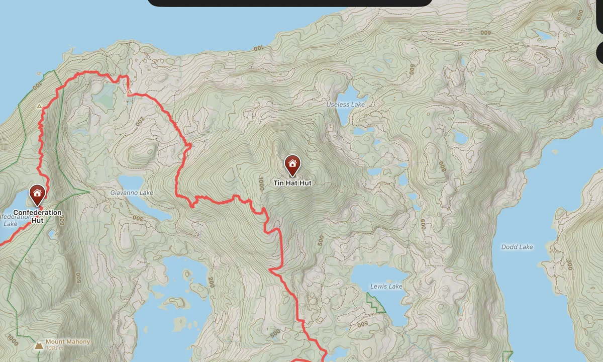
Basemaps
Pick an area and TopoKit builds a topographic map of it right on your iPhone or Mac, with shaded relief, contours, slope angle, trails, roads, water and place names. Once built, it works without a signal.
Learn moreA full GIS workflow on your iPhone and Mac. Build a topographic basemap of your area, add your own maps and data, and take it all past cell service. No account. No subscription needed.
TopoKit builds topographic basemaps right on the device and handles all your raster and vector data fully offline, organized into projects. Import your maps and points in any of the formats below, and take it into the field.

Tap a picture to watch the tool work, on Mac or on iPhone.

Pick an area and TopoKit builds a topographic map of it right on your iPhone or Mac, with shaded relief, contours, slope angle, trails, roads, water and place names. Once built, it works without a signal.
Learn more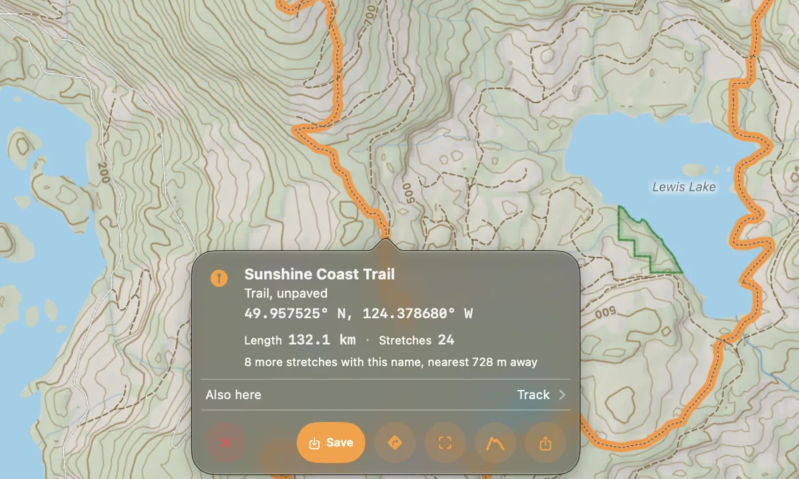
Tap a trail, a peak or one of your own lines and a card tells you what it is. Save trails and parks from your basemap into your project. Search finds their names without a signal.
Learn more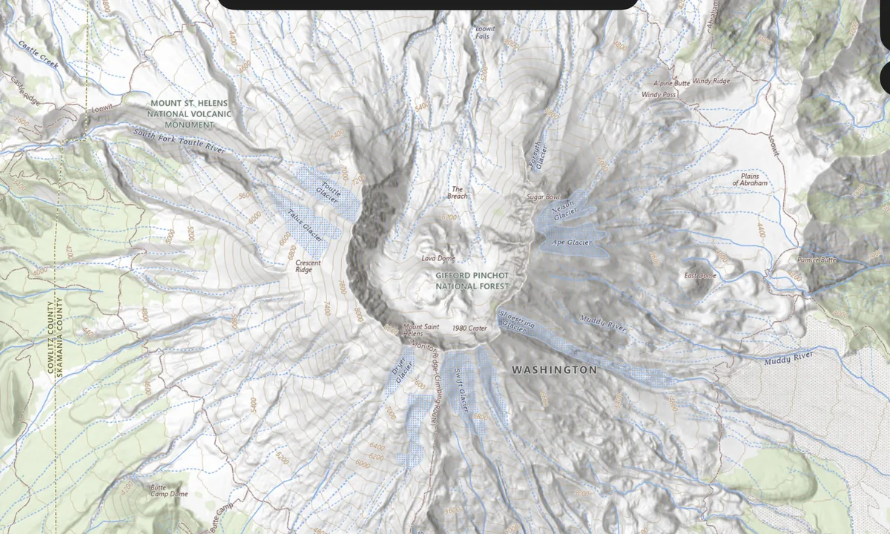
Add any XYZ or WMS tile server by URL. Draw a box on the map and download its tiles for offline use.
Learn more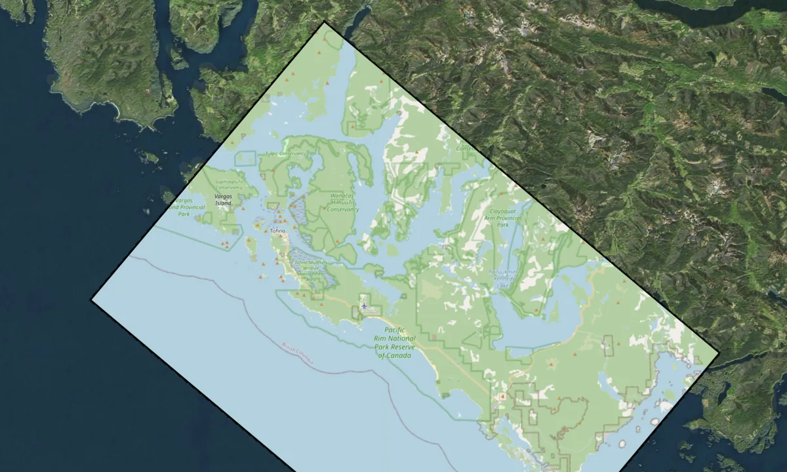
Stack as many GeoTIFFs and GeoPDFs as you need. Everything reprojects on the fly and lines up where it belongs.
Learn more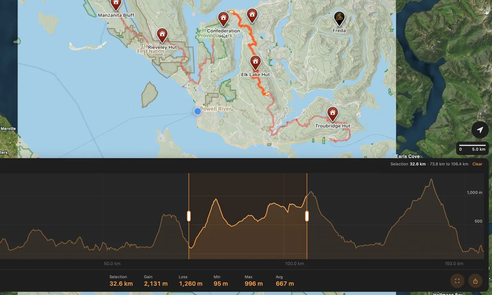
Open the elevation profile of any line, including recorded tracks and trails on your basemap. Select part of the chart and it lights up on the map. Download the data once and it works anywhere.
Learn more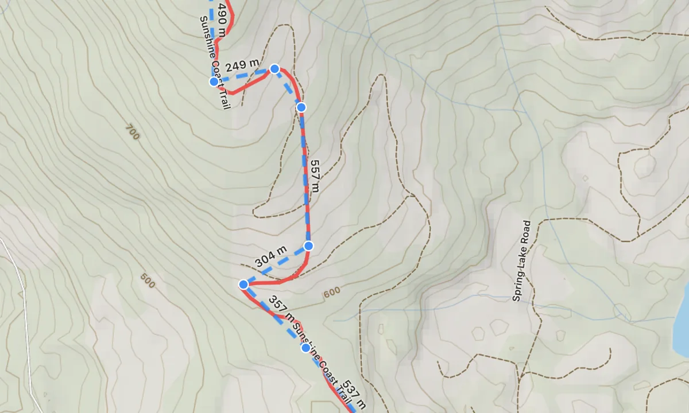
Drop points. Draw lines and polygons, then drag any vertex, add one between two others, or delete it. Style each one, attach photos, and keep them in folders.
Learn more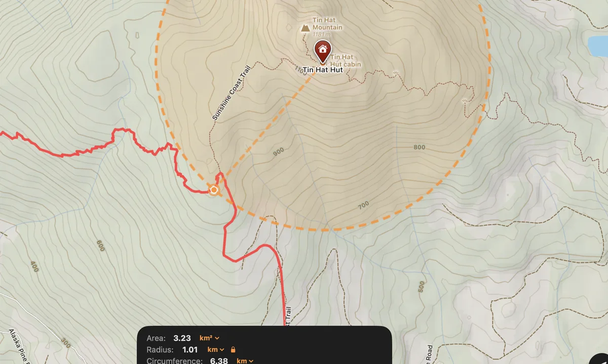
Drawing and measuring are one tool. Lengths appear along each side as you draw, and the card shows distance, area, bearing and more, in your units. Saving is optional.
Learn more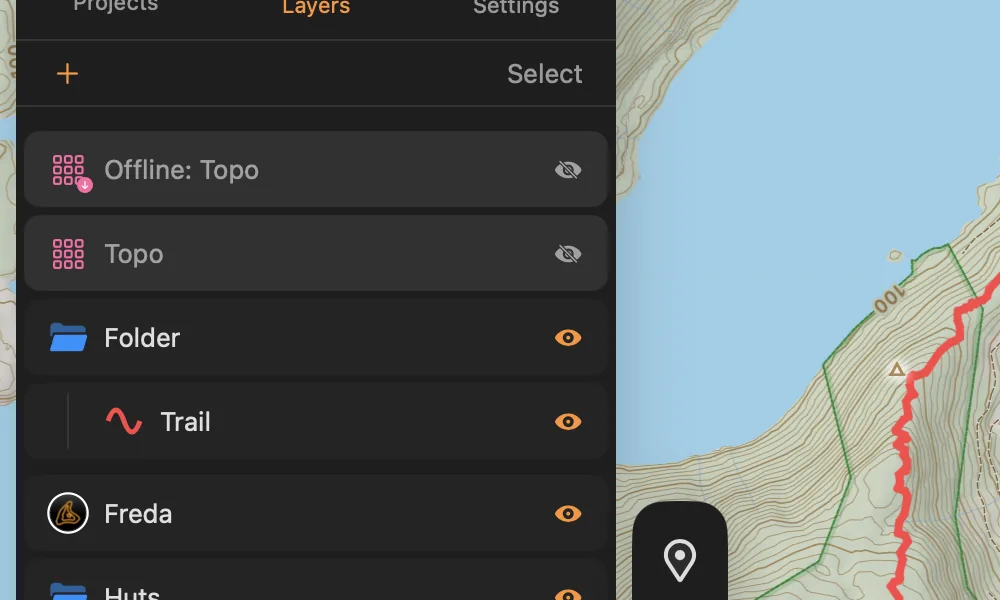
Just like the GIS apps you already know. Drag to reorder layers, group them into folders, and change their opacity. Copy, paste and duplicate layers, even between projects.
Learn more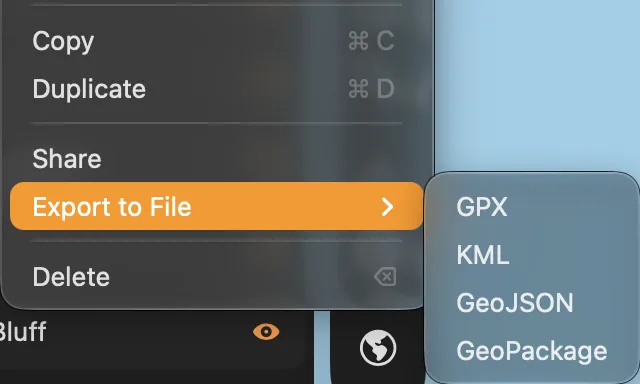
Import GPX, KML, KMZ, GeoJSON and GeoPackage, and export everything back out in four formats. Rasters come in as GeoTIFF and GeoPDF.
Learn more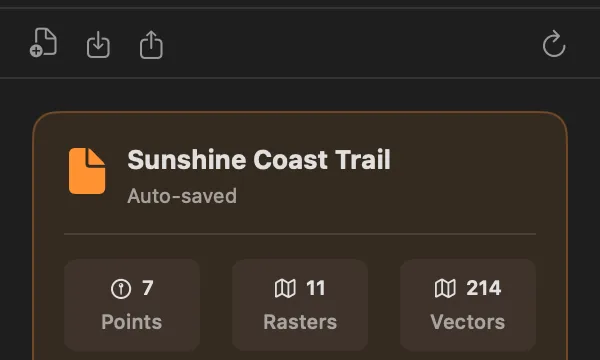
Keep each job in its own project. Open it on your Mac and pick it up on your iPhone, synced privately through your own iCloud. Sync merges changes instead of overwriting them.
Learn more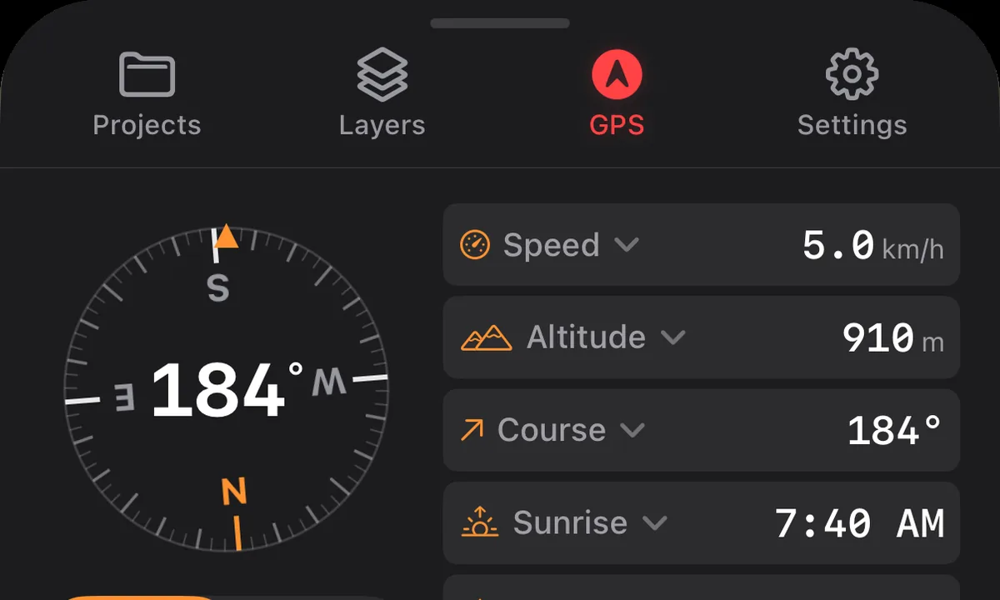
Record tracks with the phone in your pocket. Watch distance, speed and elevation update live as you go. Every point is tagged with accuracy, altitude and time.
Learn more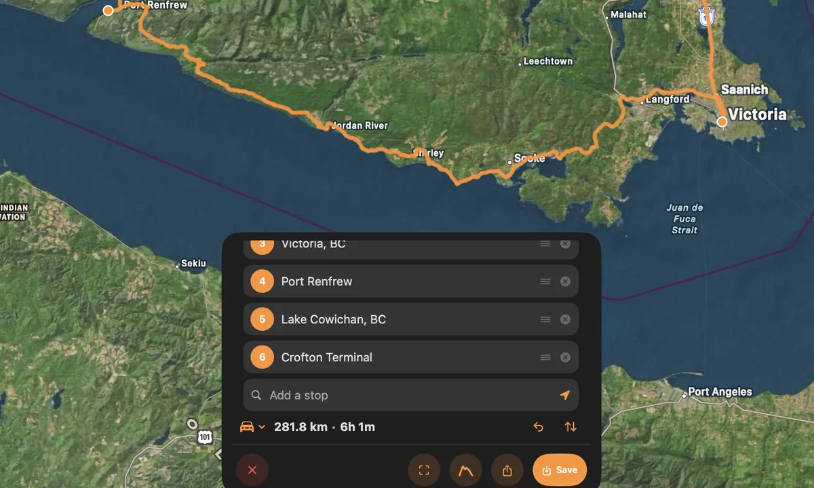
Add stops by searching or tapping the map, and the roads between them fill in for driving, walking or cycling. Check the elevation profile before saving, then share the route as a file.
Learn moreBuild a basemap of your area, import your maps and download your tiles before you leave. Once you're past cell service, they work exactly the same.
Before you go offlineOne field job from start to finish, in six short films. Recorded on the Sunshine Coast Trail, on a Mac and an iPhone.
A new project, saved to iCloud, and the map found by search.
Mac · 1 minPick the area, build it, and tap the finished map for a trail's card.
Mac · 1½ minA scanned sheet dropped on the map, a GPX trail imported, and the layers put in order.
Mac · 1½ minA walking route between two huts, its elevation profile, and a measured distance.
Mac · 1½ minTiles and elevation downloaded, the project saved offline, and the phone in Airplane Mode still working.
Mac and iPhone · 1 minA track recorded on the walk, a photo on a point, and the track back on the Mac as a GPX export.
iPhone and Mac · 1½ minTopoKit was built without an account. Your projects live on your device, and in your own iCloud if you turn on sync. Nothing you record is public by default, because nothing goes anywhere by default.

Hi, I'm Nikolay. I'm an outdoor enthusiast and GIS technician in British Columbia, Canada.
I built TopoKit because I wanted to take my data outdoors, and I couldn't find a mapping app that handled both raster and vector data, kept everything private, and didn't lock me into an expensive subscription. So I made one. You can buy TopoKit once and keep it, or pay monthly if you only need it for a season.
I use the app weekly: for data collection, backcountry trips on my own time, and any fieldwork that starts where cell service ends.
I'm constantly learning from my own experiences with TopoKit and always working to improve it. If you have an idea or something you'd like me to fix, I'm happy to look into it. Every message comes straight to me.
Capable. Private. Pay once, or by the month.
Download on theApp StoreTopoKit is free to download. Get it before 1 January 2027 and it's yours forever.
After that, opening, viewing, searching and exporting stay free. Creating and editing need the full app. Try it free for a month, then $4.99 USD a month, or unlock it forever for $34.99 USD.
Already bought TopoKit? You own all of it, on every iPhone and Mac signed into your Apple Account. Nothing to buy or restore.